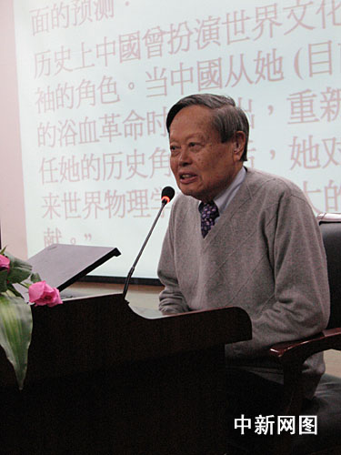

杨振宁：研究离不开眼光、坚持与能力三要素
12月2日，美籍华人物理学家、诺贝尔物理学奖获得者杨振宁在南开大学发表《1957年宇称不守恒所引起的震荡》的主题演讲。
美籍华人物理学家、诺贝尔物理学奖获得者杨振宁，12月2日在南开大学演讲时强调：任何学术研究都离不开三个要素，即眼光(Perception)、坚持(Persistence)与能力(Power)。
今天下午，杨振宁在母校南开大学发表了《1957年宇称不守恒所引起的震荡》的主题演讲。在回答学生提问时，杨振宁指出，不止是物理领域，做任何学术研究都要具备三个要素。
第一要有眼光。杨振宁回忆，当自己与李政道在理论上首次否定宇称守恒时，“大部分物理学家都不想进行我们这个实验。他们觉得非常困难，不值得去做，但吴健雄有更深入的战略性眼光。”吴健雄“独具慧眼”，看出什么东西才是真正重要的，在别的物理学家不愿意从事证明宇称不守恒的实验时，吴健雄第一个做到了。
第二要素是坚持。杨振宁说：“前沿研究多半要面临种种困难，需要坚持。”他同时表示：“当然太坚持也不行，如果走了错误的道路，坚持会浪费很多时间——这是很复杂的事情。”
杨振宁以吴健雄为例指出，学术研究的第三要素是能力。他说，科学研究中往往出现一些理论有的地方与实验符合，有的地方与实验不符合现象。上世纪40年代末，在β衰变这类实验里就出现了这类“奇怪的事情”。吴健雄能够做很复杂的计算，有着过人的能力，把“疑团一扫而光”，成为该领域的权威。

http://img001.photo.21cn.com/photos/album/20071202/o/9CD0DD99333A76144CD44111F7638186.jpg